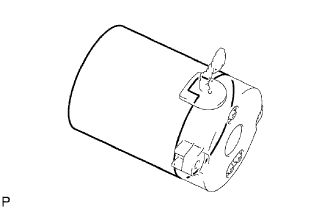
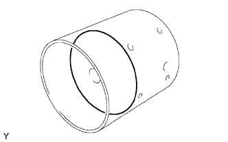
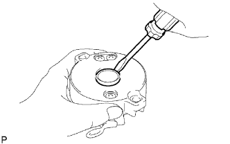
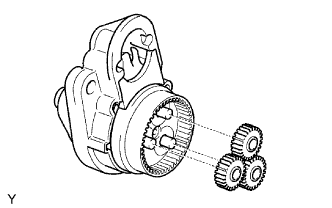
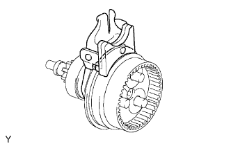

STARTER (for 1.6 kW Type) > DISASSEMBLY |
| 1. REMOVE REPAIR SERVICE STARTER KIT |
 |
Remove the nut, and disconnect the lead wire from the repair service starter kit.
 |
Remove the 2 screws which are used to secure the repair service starter kit to the starter drive housing.
Remove the repair service starter kit.
Remove the return spring and plunger.
| 2. REMOVE STARTER YOKE ASSEMBLY |
 |
Remove the 2 through bolts, and pull out the starter yoke together with the starter commutator end frame.
| 3. REMOVE STARTER COMMUTATOR END FRAME ASSEMBLY |
 |
Remove the starter commutator end frame from the starter yoke.
| 4. REMOVE STARTER ARMATURE PLATE |
 |
Remove the starter armature plate from the starter yoke.
| 5. REMOVE STARTER COMMUTATOR END FRAME COVER |
 |
Using a screwdriver, remove the starter commutator end frame cover.
| 6. REMOVE STARTER ARMATURE ASSEMBLY |
Hold the starter commutator end frame in a vise between aluminum plates.
 |
Using snap ring pliers, remove the snap ring and plate washer.
Remove the starter armature from the commutator end frame.
| 7. REMOVE PLANETARY GEAR |
 |
Remove the 3 planetary gears from the starter center bearing clutch.
| 8. REMOVE STARTER CENTER BEARING CLUTCH SUB-ASSEMBLY |
 |
Remove the starter center bearing clutch and starter drive lever set pin from the starter drive housing.
Remove the starter drive lever set pin from the starter center bearing clutch.